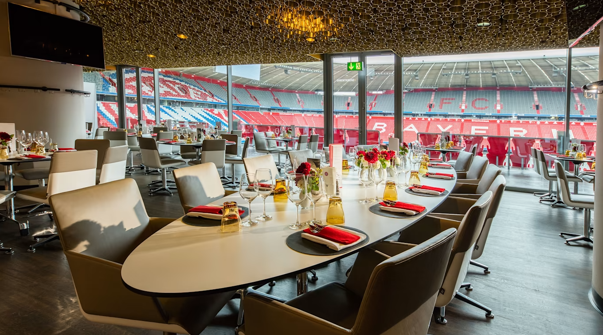
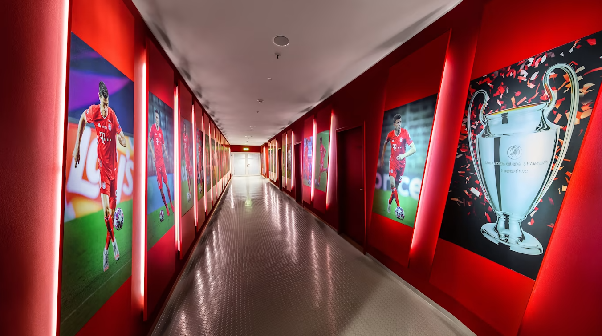
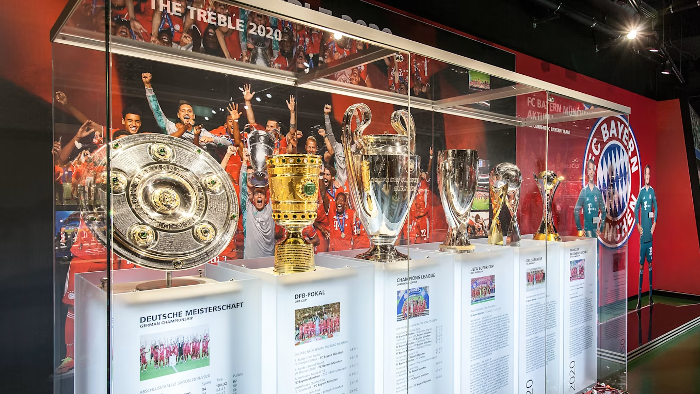

Los tickets que incluyen la visita al FC Bayern Museum vuelven a estar disponibles desde este momento. Reserva anticipada obligatoria. Por supuesto, su salud sigue estando en primer plano tras esta reapertura. Debido a ello, hay un protocolo higiénico estricto dentro de las instalaciones del Allianz Arena. Eso conlleva el cumplimiento de las medidas de seguimiento de contacto, así como la obligatoriedad de mascarillas durante la visita al estadio.